Que tu débutes ou que tu stagnes, Scriptura te donne les idées, les scripts et le diagnostic pour faire grandir ton audience, sans y passer tes nuits.
Aucun compte requis
Deux vraies captures de l'app en action, pas des maquettes : un script généré de bout en bout, et une analyse sommaire de compte sur de vrais chiffres.
Un script, prêt à tourner
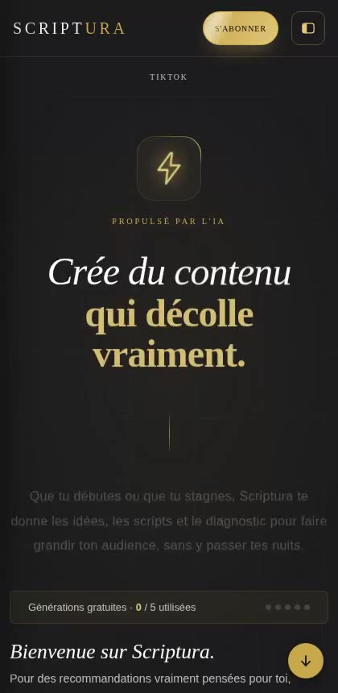
Un diagnostic, sur tes vrais chiffres
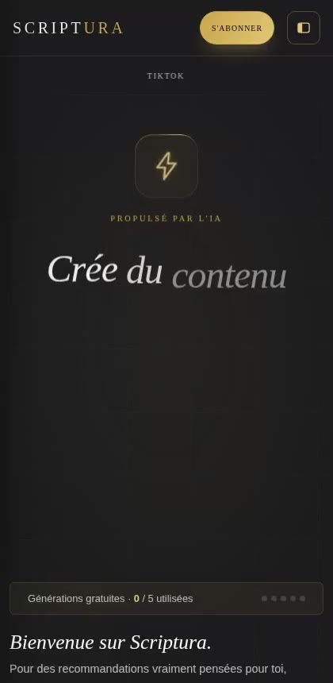
À partir de 6.000 FCFA / mois.
ChatGPT, Gemini ou Claude sont des assistants généralistes. Scriptura, lui, est bâti pour une seule mission, faire décoller ton contenu, et il le fait avec des choses qu'un chatbot ne peut pas.
Ce que des créateurs de contenu font déjà avec Scriptura.
Chaque script est sorti de Scriptura.
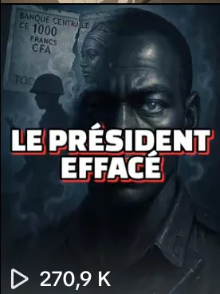
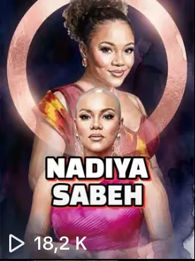
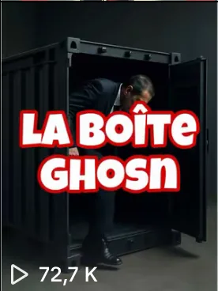
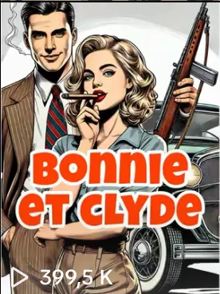
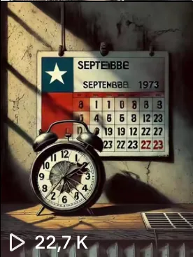
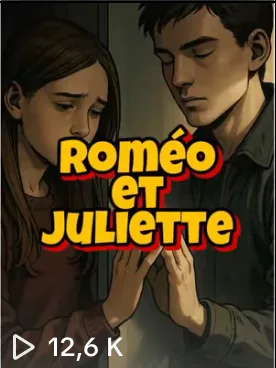
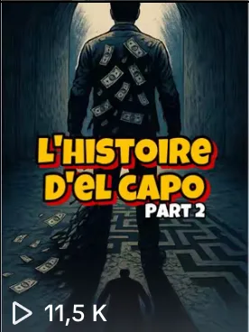
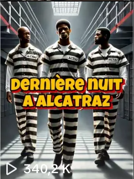
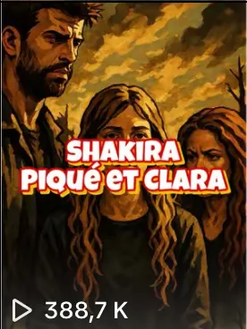
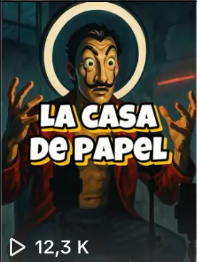
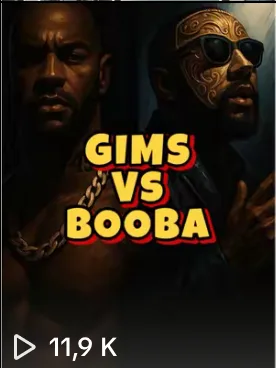
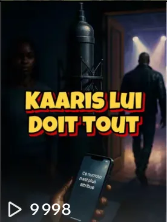
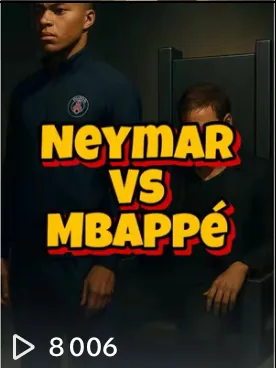
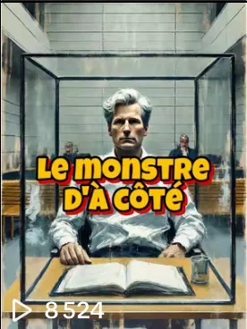
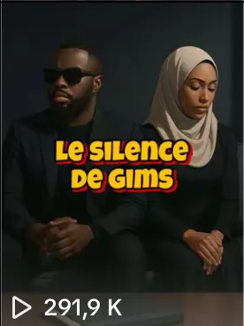
Commence gratuitement, sans compte. Tu passes à un plan seulement quand tu es prêt.
Pas envie de t'abonner ? Des jetons à l'unité,1 jeton = 1 diagnostic ou 1 série, dès 3.500 FCFA.
Storyboard à partir d'un script déjà écrit, transcription ou téléchargement d'une vidéo TikTok, sans passer par un mode de création.